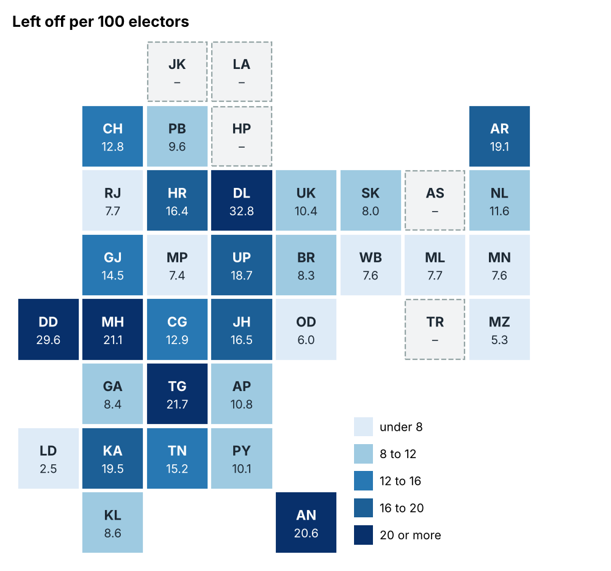
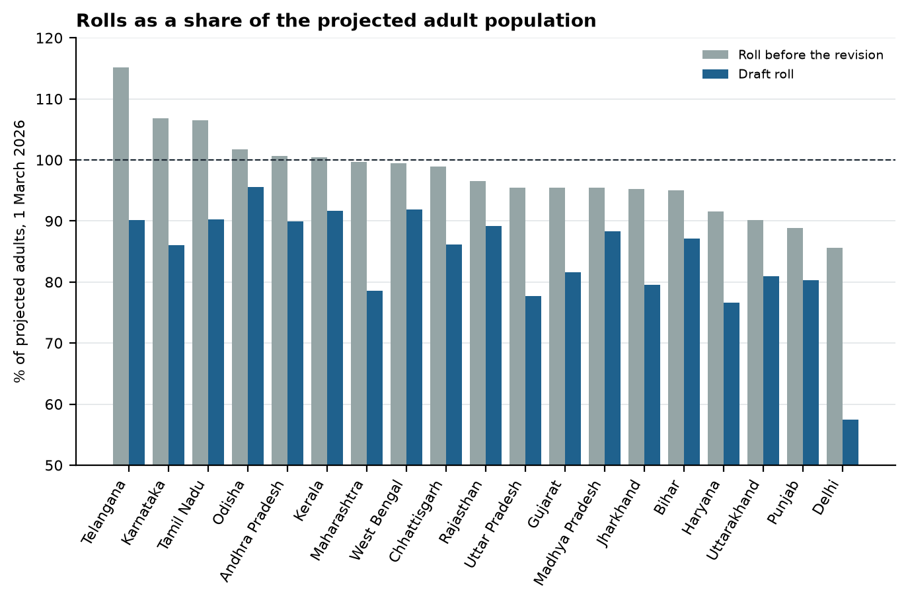
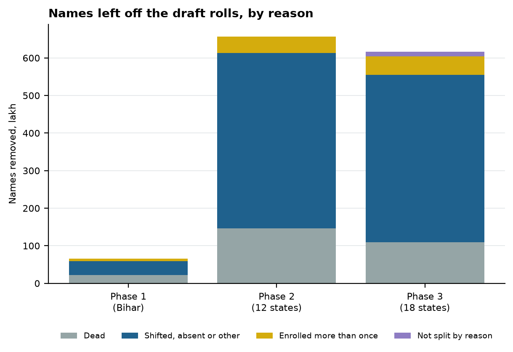
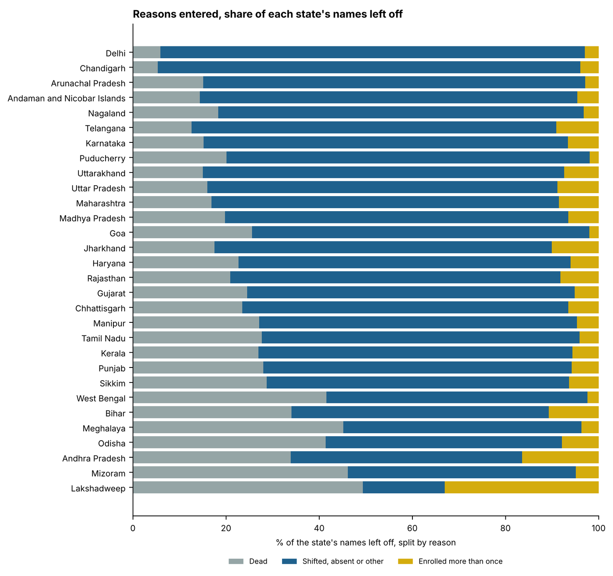
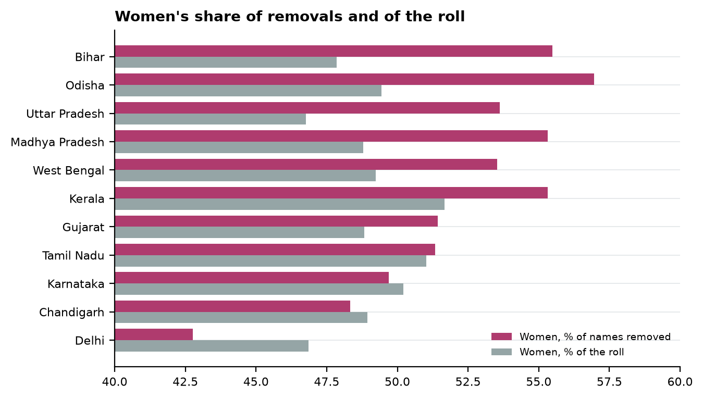
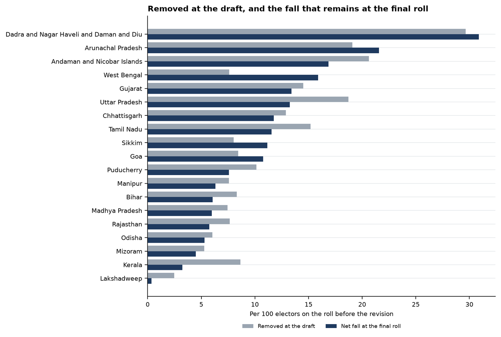

Special Intensive Revision 2025-26
India: 13.39 crore names left off the draft rolls
The reasons recorded for removals in each state, who was removed by sex where states published it, and what goes with the removal rate
- 13,39,21,374
- names left off the draft rolls in 31 states and union territories
- 71.4%
- of those split by reason entered as shifted, absent or other
- 21.0%
- entered as dead
- 7.6%
- entered as enrolled more than once
Varna Sri Raman · 1 October 2026
In short
- Before the revision, the rolls already held 98.3% of adults in the 19 states with population projections. Only 6 of those states had more names on the roll than adults.
- The revision still took off 13.39 crore names in 31 states, 14.1 of every 100 electors, and the draft rolls now hold 84.4% of adults. States whose rolls were most over-full did not cut more.
- Of the names removed with a reason given, only 21.0% were entered as dead. The rest are names an officer marked as moved, not found or on the roll twice, and nobody has checked those entries.
- The same rules gave very different results. Delhi removed 32.8 of every 100 electors and Lakshadweep 2.5. Among the big states, the share marked moved or not found runs from 49.7% in Andhra Pradesh to 91.1% in Delhi.
- Women were more likely to be removed. In 7 of the 10 states that report by sex, women are a bigger share of the names removed than of the roll.
- Little has come back. In the 20 states with a final roll, the rolls grew back by at most 14.2% of what was cut, and that rise includes new voters.
Two limits. The adult figures count people where they live, so states that draw migrants look short of electors who are registered in their home states. And these figures show what happened, not why, so they cannot show anyone meant it to happen.
At a glance
The Special Intensive Revision has been carried out in three phases: Bihar in 2025, twelve states and union territories from November 2025, and eighteen more in 2026. In the 31 that have published a draft roll, 13,39,21,374 electors on the rolls before the revision were not carried onto it: 14.1 for every 100. Tripura, the last, publishes its draft in December.
Every state gave a reason for most of its removals. Of the 13.27 crore names it split by reason, 2.78 crore (21.0%) were entered as dead, 9.48 crore (71.4%) as shifted, absent or other, and 1.01 crore (7.6%) as enrolled more than once. Deaths are about one in five. The other four in five rest on an officer's entry that the elector was not where the roll placed them, or was on it twice.
A reason is what an officer wrote down after a visit, or after failing to find the elector, and nobody has checked it. The figures cannot say how many entries were wrong.
State by state, on one map

The rolls against the adult population

A roll larger than the adult population is what a roll swollen by the dead and the departed would look like, and it is the case the revision was meant to answer. Across the 19 states with projections by age, the rolls before the revision held 98.3% of the projected population aged 18 and over, and the draft rolls hold 84.4%. Only 6 had a roll larger than their adult population: Telangana, Karnataka, Tamil Nadu, Odisha, Andhra Pradesh and Kerala. How far a roll exceeded its adult population has no relationship with how many names the state removed (rank correlation 0.03). The lowest draft rolls against the adult population are in Delhi (57.5%), Haryana (76.3%) and Uttar Pradesh (77.6%). The projections count residents, so a state that receives many migrants counts adults who may be registered in their home state, which lowers its ratio.
Set against the 2024 Lok Sabha election, the names left off the draft roll equal a fifth or more of the votes polled in 13 states, led by Delhi (53.2%), Dadra and Nagar Haveli and Daman and Diu (42.6%) and Maharashtra (36.1%).
The three reasons, by phase

The share entered as dead fell from 34.0% in Bihar to 22.2% in phase 2 and 18.1% in phase 3, while the share entered as shifted, absent or other rose from 55.3% to 71.0% and 73.6%. Removals per 100 electors rose with each phase: 8.3, 12.9 and 17.0.
State by state

Among states that removed ten lakh names or more, the share entered as shifted, absent or other runs from 49.7% in Andhra Pradesh to 91.1% in Delhi. Among them the share entered as dead is highest in Odisha (41.7%), and the share entered as enrolled more than once in Andhra Pradesh (16.4%). One revision under one set of instructions produced very different mixes of reasons from state to state, and the Commission has not explained why.
Removals per 100 electors range from 2.5 in Lakshadweep to 32.8 in Delhi. Uttar Pradesh removed the most names in all, 2.89 crore.
| State or UT | Phase | Removed | Per 100 | Dead | Shifted, absent, other | Duplicate | Split | Figures |
|---|---|---|---|---|---|---|---|---|
| Uttar Pradesh | 2 | 2,89,00,000 | 18.7 | 46,23,000 | 2,17,00,000 | 25,47,000 | Full | rounded |
| Maharashtra | 3 | 2,06,88,487 | 21.1 | 34,81,000 | 1,54,55,000 | 17,63,000 | Full | rounded |
| Karnataka | 3 | 1,07,96,339 | 19.5 | 16,39,864 | 84,46,605 | 7,09,870 | Full | exact |
| Tamil Nadu | 2 | 97,37,831 | 15.2 | 26,94,672 | 66,44,881 | 3,98,278 | Full | exact |
| Gujarat | 2 | 73,73,327 | 14.5 | 18,07,278 | 51,84,579 | 3,81,470 | Full | rounded |
| Telangana | 3 | 73,39,235 | 21.7 | 9,22,229 | 57,46,803 | 6,70,203 | Full | rounded |
| Bihar | 1 | 65,59,626 | 8.3 | 22,32,586 | 36,25,981 | 7,01,059 | Full | exact |
| West Bengal | 2 | 58,20,899 | 7.6 | 24,16,000 | 32,65,000 | 1,38,000 | Full | rounded |
| Delhi | 3 | 47,56,000 | 32.8 | 2,82,000 | 43,32,000 | 1,41,000 | Full | rounded |
| Andhra Pradesh | 3 | 44,89,512 | 10.8 | 15,22,000 | 22,30,000 | 7,37,000 | Full | rounded |
| Jharkhand | 3 | 43,61,987 | 16.5 | 7,63,000 | 30,42,000 | 4,38,000 | Short | rounded |
| Madhya Pradesh | 2 | 42,74,160 | 7.5 | 8,46,000 | 31,51,000 | 2,77,000 | Full | rounded |
| Rajasthan | 2 | 41,79,000 | 7.7 | 8,75,000 | 29,60,000 | 3,44,000 | Full | rounded |
| Haryana | 3 | 33,83,302 | 16.4 | 7,66,000 | 24,13,000 | 2,04,000 | Full | rounded |
| Chhattisgarh | 2 | 27,34,817 | 12.9 | 6,42,234 | 19,13,540 | 1,79,043 | Full | exact |
| Kerala | 2 | 24,08,503 | 8.7 | 6,49,885 | 16,22,599 | 1,36,029 | Full | exact |
| Punjab | 3 | 20,66,635 | 9.6 | 5,74,568 | 13,56,846 | 1,19,145 | Short | exact |
| Odisha | 3 | 20,12,557 | 6.0 | 8,32,544 | 10,07,454 | 1,58,118 | Short | exact |
| Uttarakhand | 3 | 8,26,977 | 10.4 | – | – | – | None | exact |
| Meghalaya | 3 | 1,80,402 | 7.7 | 81,490 | 92,211 | 6,701 | Full | exact |
| Arunachal Pradesh | 3 | 1,69,459 | 19.1 | 25,573 | 1,38,939 | 4,947 | Full | exact |
| Manipur | 3 | 1,58,677 | 7.6 | 43,000 | 1,08,283 | 7,394 | Full | exact |
| Nagaland | 3 | 1,57,752 | 11.6 | 28,944 | 1,23,749 | 5,059 | Full | exact |
| Dadra and Nagar Haveli and Daman and Diu | 3 | 1,26,894 | 29.6 | – | – | – | None | exact |
| Puducherry | 2 | 1,03,467 | 10.1 | 20,798 | 80,645 | 2,024 | Full | exact |
| Goa | 2 | 1,00,042 | 8.4 | 25,574 | 72,471 | 1,997 | Full | exact |
| Chandigarh | 3 | 66,145 | – | – | – | – | None | exact |
| Andaman and Nicobar Islands | 2 | 64,014 | 20.6 | 9,191 | 51,906 | 2,917 | Full | exact |
| Mizoram | 3 | 46,162 | 5.3 | – | – | – | None | exact |
| Sikkim | 3 | 37,737 | 8.0 | 10,837 | 24,504 | 2,396 | Full | exact |
| Lakshadweep | 2 | 1,429 | 2.5 | 705 | 252 | 472 | Full | exact |
| Tripura | 3 | – | – | – | – | – | No draft | – |
Under Split, Full means the reasons account for the total within rounding, Short means they leave some names unexplained (Jharkhand, Punjab and Odisha), and None means no split was found (Uttarakhand, Dadra and Nagar Haveli and Daman and Diu, Chandigarh and Mizoram). Under Figures, rounded means the state published in lakh or crore (11 states).
Women among the removed

Only ten states have published their removals by sex, or their roll by sex before the revision and on the draft. In 7 of the ten, women are a larger share of the names removed than of the roll, by up to 7.6 points in Bihar. Tamil Nadu and Karnataka are within a point of even, and Delhi runs the other way, by 4.1 points. Most phase 3 states have published no split by sex, so this is not the national picture.
| State | Women removed | Men removed | Women, % removed | Women, % of roll | Difference | Figures |
|---|---|---|---|---|---|---|
| Bihar | 36,39,976 | 29,19,433 | 55.5 | 47.9 | +7.6 | lists |
| Odisha | 11,46,140 | 8,66,107 | 57.0 | 49.4 | +7.5 | exact |
| Uttar Pradesh | 1,55,00,000 | 1,34,00,000 | 53.6 | 46.8 | +6.9 | rounded |
| Madhya Pradesh | 23,63,850 | 19,08,541 | 55.3 | 48.6 | +6.7 | exact |
| West Bengal | 31,20,834 | 27,00,065 | 53.6 | 49.2 | +4.4 | exact |
| Kerala | 13,10,361 | 10,58,149 | 55.3 | 51.7 | +3.6 | earlier roll |
| Gujarat | 37,91,000 | 35,82,000 | 51.4 | 48.8 | +2.6 | rounded |
| Tamil Nadu | 49,90,000 | 47,30,000 | 51.3 | 51.0 | +0.3 | unverified |
| Karnataka | 53,64,049 | 54,30,166 | 49.7 | 50.2 | -0.5 | exact |
| Delhi | 20,34,005 | 27,22,139 | 42.8 | 46.9 | -4.1 | exact |
What goes with the removal rate
Each state's removals per 100 electors, and the shares of its removals entered as dead or as enrolled more than once, are set against its characteristics as rank correlations across states: 1 means the two rise together, 0 no relationship, and anything under 0.2 either way is read as none. The number of states in each is in brackets.
| Characteristic | Rate, all states | Rate, phase 2 | Rate, phase 3 | Share dead | Share twice, larger states |
|---|---|---|---|---|---|
| Share of residents born in another state (Census 2011) | 0.53 (28) | 0.04 (12) | 0.68 (15) | -0.45 (25) | -0.26 (16) |
| Income per head (RBI, 2023-24) | 0.40 (28) | 0.17 (11) | 0.50 (16) | -0.25 (26) | -0.39 (18) |
| Urban spending per head (HCES 2023-24) | 0.27 (30) | 0.28 (12) | 0.16 (17) | -0.33 (27) | -0.32 (18) |
| SC share of households (NFHS-5, 2019-21 (households)) | 0.19 (30) | 0.01 (12) | 0.38 (17) | -0.03 (27) | -0.15 (18) |
| Urban share (Technical Group projection, 2026) | 0.09 (29) | -0.24 (12) | 0.31 (16) | -0.11 (27) | -0.57 (18) |
| Rural spending per head (HCES 2023-24) | 0.08 (30) | 0.09 (12) | 0.08 (17) | -0.12 (27) | -0.34 (18) |
| Muslim share of households (NFHS-5, 2019-21 (households)) | 0.08 (30) | -0.27 (12) | 0.45 (17) | -0.02 (27) | -0.02 (18) |
| Share born here but living in another state (Census 2011) | 0.03 (28) | -0.30 (12) | 0.31 (15) | -0.01 (25) | 0.24 (16) |
| Literacy (PLFS 2023-24) | -0.11 (30) | -0.04 (12) | -0.19 (17) | 0.08 (27) | -0.68 (18) |
| Women's literacy (PLFS 2023-24) | -0.13 (30) | -0.10 (12) | -0.19 (17) | 0.12 (27) | -0.70 (18) |
| ST share of households (NFHS-5, 2019-21 (households)) | -0.27 (30) | -0.45 (12) | -0.28 (17) | 0.15 (27) | 0.27 (18) |
| Sex ratio (NFHS-5, 2019-21) | -0.46 (30) | -0.36 (12) | -0.47 (17) | 0.46 (27) | 0.28 (18) |
Across all states the removal rate goes most with the share of residents born in another state (0.53), and that comes from phase 3 (0.68). In phase 2 it is 0.04. In phase 3, income per head, Muslim share of households, sex ratio and share of residents born in another state all go with the removal rate, because the big states that draw migrants were revised in the same phase as the North-East, and they differ from it on all of these at once. With only 15 states in the phase, there is no telling these apart. The only characteristics that go with the removal rate the same way in both phases are ST share of households (-0.45 in phase 2, -0.28 in phase 3) and sex ratio (-0.36 in phase 2, -0.47 in phase 3). The Muslim share of households has no consistent relationship, 0.08 across all states, -0.27 in phase 2 and 0.45 in phase 3. Among the larger states, the share entered as enrolled more than once goes most with women's literacy (-0.70). Migration is from the 2011 census because no newer figure is published by state, and every other characteristic is from 2019 to 2026. Run on the 2011 census values instead, the reading changes only for urban share.
States on an international border removed fewer names than interior states. The typical border state removed 8.3 per 100 electors across 13 states, and the typical interior state 15.2 across 17. None of these relationships says who was removed inside a state, because a pattern across states tells us nothing about individuals.
After the final rolls

In the 20 states and union territories with a final roll, 7.49 crore names were left off the drafts, and the final rolls came out 1.06 crore larger than the drafts: 14.2% of the fall. West Bengal kept 60.1 lakh names off its final roll while they are decided, and without them the final rolls were 1.67 crore larger, 22.2% of the fall. Against the rolls before the revision, the fall is 10.2 per 100 electors at the final roll, from 11.9 at the draft.
The rise from draft to final counts new electors as well as names put back, and no state has said how many of those added had been removed at the draft, so it is the most that can have been put back. The final roll is smaller than the draft in 5 states: West Bengal, Goa, Arunachal Pradesh, Dadra and Nagar Haveli and Daman and Diu and Sikkim. How many names a state removed at the draft has no relationship with how much of that its final roll made up (rank correlation -0.12).
| State or UT | Removed at draft | Added after | Removed after | Final less draft | Made up | Net fall per 100 | Figures |
|---|---|---|---|---|---|---|---|
| Uttar Pradesh | 2,89,00,000 | – | 8,15,996 | 84,28,767 | 29.2% | 13.3 | Net only |
| Tamil Nadu | 97,37,831 | 27,53,000 | 4,23,000 | 23,30,624 | 23.9% | 11.6 | Rounded |
| Gujarat | 73,73,327 | – | – | 5,60,616 | 7.6% | 13.4 | Net only |
| Bihar | 65,59,626 | 21,53,343 | 3,66,742 | 17,86,601 | 27.2% | 6.0 | Adds up |
| West Bengal | 58,20,899 | 1,88,707 | 5,46,053 | −63,64,021 | -109.3% | 15.9 | Adds up |
| Madhya Pradesh | 42,74,160 | – | – | 8,49,082 | 19.9% | 6.0 | Net only |
| Rajasthan | 41,79,000 | 12,91,365 | 2,42,760 | 10,48,605 | 25.1% | 5.7 | Adds up |
| Chhattisgarh | 27,34,817 | – | – | 2,34,994 | 8.6% | 11.8 | Net only |
| Kerala | 24,08,503 | 15,11,292 | 53,229 | 15,11,292 | 62.7% | 3.2 | Does not add up |
| Odisha | 20,12,557 | 2,90,497 | 44,777 | 2,45,720 | 12.2% | 5.3 | Adds up |
| Arunachal Pradesh | 1,69,459 | 8,803 | 30,823 | −22,020 | -13.0% | 21.6 | Adds up |
| Manipur | 1,58,677 | 56,871 | 30,650 | 26,221 | 16.5% | 6.3 | Adds up |
| Dadra and Nagar Haveli and Daman and Diu | 1,26,894 | – | – | −5,309 | -4.2% | 30.9 | Net only |
| Puducherry | 1,03,467 | 41,492 | 16,619 | 26,100 | 25.2% | 7.6 | Does not add up |
| Goa | 1,00,042 | 12,166 | 39,592 | −27,426 | -27.4% | 10.8 | Adds up |
| Chandigarh | 66,145 | 15,117 | 5,190 | 9,927 | 15.0% | – | Adds up |
| Andaman and Nicobar Islands | 64,014 | 16,919 | 5,269 | 11,650 | 18.2% | 16.9 | Adds up |
| Mizoram | 46,162 | 39,243 | 32,280 | 6,963 | 15.1% | 4.5 | Adds up |
| Sikkim | 37,737 | 1,982 | 16,809 | −14,827 | -39.3% | 11.2 | Adds up |
| Lakshadweep | 1,429 | 1,270 | 47 | 1,223 | 85.6% | 0.4 | Adds up |
Under Figures, adds up means the draft plus additions less removals equals the final roll, net only means the state published the draft and final rolls but not the additions and removals behind the difference, and does not add up means the published figures do not match (Kerala and Puducherry). Removals after the draft carry no reason in any state except Bihar, so they are outside every figure by reason in this report. Maharashtra, Karnataka, Telangana, Delhi, Andhra Pradesh, Jharkhand, Haryana, Punjab, Uttarakhand, Meghalaya and Nagaland have not yet published a final roll.
What the Election Commission should do
13.39 crore names came off the draft rolls, about four in five of them on an entry that the elector had moved, could not be found, or was on the roll twice. The Election Commission should:
- Publish a state-by-state table of its own, with the reason for every removal at the draft and after it, exact rather than rounded.
- Publish the deletion lists with the reason against each name for every state, as it did for Bihar, so that removals can be counted by booth, sex and age.
- Publish the basis for entries marked absent and enrolled more than once.
- Publish the outcome of every claim and objection, and say how many of those added at the final roll had been removed at the draft, so that restorations can be set against removals.
- Explain why the mix of reasons differs so widely between states under one set of instructions.
Method and sources
The All India figures are the Chief Electoral Officers' own, published when each draft roll came out. They are taken from the press notes where those could be read (Lakshadweep, Meghalaya, Arunachal Pradesh, Manipur and Nagaland) and from press reports otherwise. Bihar's row is counted from the deletion lists. The reasons are grouped into the three every state reported. The state rows add up to 13.39 crore removed, against the about 13.3 crore reported nationally on 30 September 2026, and the difference is rounding. Each row's source is listed on the method page of the site and in the downloadable table.
No name, EPIC number or address is published.